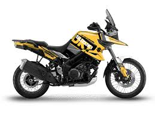

Suzuki V-Strom 1050XT
Avaldatud: 13.05.2025

Testimiskoht: Peipsi ääres kulgevad teed ja külavahed.
Mis meeldis?
- Hea kütusekulu ja mõistlik hoolduskulu – sobib ka igapäevasõiduks.
- Kindel juhitavus ja pehme vedrustus kehvematel teedel.
- Funktsionaalne ja selge armatuur – ei midagi üleliigset.
- Palju lisavarustust – pakiraamid, USB-pistik jms.
Mis ei meeldinud?
- Mootor jääb võrreldes konkurentidega veidi tagasihoidlikuks.
- Klassikaline disain ei pruugi kõigile meeldida.
Suzuki V-Strom 1050XT sobib ideaalselt neile, kes otsivad usaldusväärset ja mitmekülgset matkamootorratast. Test Peipsi ääres kinnitas, et see on töökindel ja mugav kaaslane pikematel sõitudel.
Märksõnad: Suzuki, V-Strom, matkaratas, Peipsi, universaalne, test